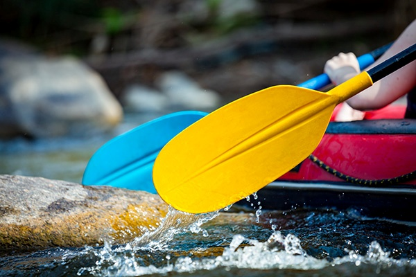

Rafting nas Corredeiras
Nosso passeio mais emocionante. Em um bote para seis pessoas, a equipe enfrenta trechos de corredeiras classes III e IV, com direito a quedas, ondas e muita adrenalina. Antes da descida, a instrutora de segurança faz um treinamento de remada e de procedimentos de emergência.
Duração: 3 horas · Dificuldade: Alta